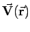
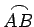

Inhalt Index DeskTop Bronstein

 Vektoranalysis und Feldtheorie Integration in Vektorfeldern Kurvenintegral und Potential im Vektorfeld Kurvenintegral im Vektorfeld
Vektoranalysis und Feldtheorie Integration in Vektorfeldern Kurvenintegral und Potential im Vektorfeld Kurvenintegral im Vektorfeld


Kurven- oder Linienintegral einer Vektorfunktion , genommen über ein Bogenstück  (s. Abbildung),
nennt man den Skalar